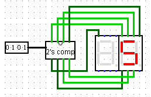

You are free to talk with others about the problems, but all the work you submit must be completely your own.
ExercisesExercises
1.
Let \(X\) and \(Y\) be unsigned 2-bit integers, and write \(X = x_1 x_0\) and \(Y = y_1 y_0\text{.}\) For example, if \(x_1 = 1\) and \(x_0 = 0\text{,}\) then \(X = 2\text{.}\) Similarly, if \(y_1 = y_0 = 1\text{,}\) then \(Y = 3\text{.}\) In this problem, think of \(x_0\text{,}\)\(x_1\text{,}\)\(y_0\text{,}\) and \(y_1\) as inputs to a digital circuit.
(a)
Write a boolean expression (using AND, OR, NOT operations on the input variables \(x_0\text{,}\)\(x_1\text{,}\)\(y_0\text{,}\) and \(y_1\)) for the condition \(X \gt Y\text{.}\) (So, for example, if \(X = 2\) and \(Y = 3\text{,}\) then the formula should evaluate to FALSE.)
(b)
Write a truth table for your formula.
(c)
Using the theory of minterms and maxterms, implement your formula as a digital circuit and save it in Logisim with filename prob01.circ.
2.
In this exercise, you will design a logic circuit in Logisim to drive two 7-segment displays from a 4-bit input. We will use 2’s complement arithmetic to handle negative numbers and create a circuit that can display any integer in the range \(-8\) to \(+7\text{.}\) In a later exercise you combine these with adders to create a circuit that can add two 4-bit signed integers and display the result.
Recall that in 2’s complement arithmetic on 4-bit integers, bit patterns 0000 through 0111 represent the integers \(0\) through \(7\text{,}\) and bit patterns 1000 through 1111 represent the integers \(-8\) through \(-1\text{.}\) The bit pattern 1000 represents \(-8\text{,}\)1001 represents \(-7\text{,}\) and so on up to 1111 representing \(-1\text{.}\)
As we saw in class, there are two advantages of this system over the more obvious sign-magnitude system (where the leading bit simply acts like a minus sign). First, there is only one representation of zero, and second, the circuit for addition is exactly the same as for unsigned integers. You will verify this during the course of this exercise.
Figure 3.4.3 shows a 7-segment display circuit in Logisim, with a 3-bit input \(X = x_2 x_1 x_0\) connected to a “7-segment decoder” that drives the display. The decoder is a subcircuit you will design and implement using truth tables and minterms and maxterms. The decoder has 7 outputs, \(A\) through \(G\text{,}\) that individually drive the segments of the display. The display has 8 pins, numbered 0 through 7, that are connected to the decoder outputs.
Figure3.4.1.Pin labels.
Figure3.4.2.Segment labels.
Figure3.4.3.The completed decoder.
The outputs of your decoder should correspond to the labeled segments in Figure 3.4.2. The decoder should be designed so that it decodes the binary word \(x_2 x_1 x_0\) and shows the value on the display.
That is, when \(x_2 = x_1 = x_0\text{,}\) the input is \(X = 0\text{,}\) and the display shows \(0\text{;}\) when \(x_2 = x_1 = 0\) and \(x_0 = 1\text{,}\) the input is \(X = 1\text{,}\) and the display shows \(1\text{;}\) and so on. The completed circuit should look like Figure 3.4.3.
Save your work in a file named prob02.circ.
3.
In a new Logisim file, build another decoder, this time with a 4-bit input \(X = x_3 x_2 x_1 x_0\) and 8 single-bit outputs. This decoder should also go in a subcircuit, named TWOSCOMP. In the main circuit, connect a 4-bit input pin to your decoder and connect the outputs to two 7-segment displays. Your task is to design the decoder so that it displays the 2’s complement representation of the input integer.
For example, if the input is \(X = 0111\text{,}\) then the decoder should display \(7\text{.}\) If the input is \(X = 1000\text{,}\) then the decoder should display \(-8\text{.}\) If the input is \(X = 1111\text{,}\) then the decoder should display \(-1\text{.}\) The decoder should display all the integers in the range \(-8\) to \(7\text{,}\) as illustrated in Figure 3.4.4 and Figure 3.4.5.
Figure3.4.4.Positive integers.
Figure3.4.5.Negative integers.
Save your work in a file named prob03.circ.
4.
Construct a circuit using three of your TWOSCOMP controllers from the previous problem and six 7-segment display to show a 2’s complement addition. You will need the 4-bit adder subcircuit from Project 04 (on Canvas). The adder subcircuit here is the small box with the \(+\) sign. You can use the built-in Adder component from the Arithmetic menu, but only single-bit adders: implement your own 4-bit ripple carry adder.
The completed circuit should resemble Figure 3.4.6.
Figure3.4.6.2’s complement adder.
Save your work in a file named prob04.circ.
5.
If you Poke in (hand tool) various values in your circuit from the previous problem, you will notice the result is not always correct. Chapter 3 in Plantz discusses fixed-width addition errors in detail. In this problem, your task is to add an error-detecting circuit to your 4-bit signed adder from the previous problem.
The error-detecting circuit should have three inputs and a single output that is \(1\) if the result of the addition is incorrect and \(0\) otherwise. The error-detecting circuit should be implemented as a subcircuit named ERROR. The completed circuit should resemble Figure 3.4.7.
Figure3.4.7.2’s complement adder with error detection.
Save your work in a file named prob05.circ.
Subsection3.4.2Homework 2
You are free to talk with others about the problems, but all the work you submit must be completely your own.
ExercisesExercises
1.
In this problem, you will design a 2-bit (clocked) register with JK flip-flops. The register should have two bits of input, \(X_0\) and \(X_1\text{,}\) and two bits of output, \(Q_0\) and \(Q_1\text{.}\) When the clock input is \(0\text{,}\) the register should hold its current value. When the clock input changes from \(0\) to \(1\text{,}\) the register should load the values of \(X_0\) and \(X_1\) (meaning those should be the values of \(Q_0\) and \(Q_1\) after the clock changes from \(0\) to \(1\)).
The state diagram is easier to describe than it is to draw. There are four states, 0, 1, 2, and 3. When the input is \(X\text{,}\) the next state is \(X\text{,}\) regardless of the current state. Here is a table summarizing the situation:
\(X\)
current state
next state
0
0
0
0
1
0
0
2
0
0
3
0
1
0
1
1
1
1
1
2
1
1
3
1
2
0
2
2
1
2
2
2
2
2
3
2
3
0
3
3
1
3
3
2
3
3
3
3
As in class, you should organize your calculation and design in the following steps.
Encode the states and inputs as binary numbers.
Rewrite the state transition table using your binary encoding.
The current state is the value of the output. Each output bit will be connected to a flip-flop. Add appropriate columns to the state transition table for the flip-flops.
Fill in the new columns based on the transition diagrams for the flip-flops you selected. We used JK flip-flops in class and it is fine to stick with those. Using anything else will require a bit more creativity and engineering problem-solving from you. Not every flip-flop is appropriate for every circuit.
Create K-maps for each of the flip-flop columns you added.
Write the boolean expressions for the next state of each flip-flop.
Implement the circuit in Logisim and save it in a file named prob01.circ.
2.
Design a clocked circuit with one (non-clock) input bit. There will be one bit of output. Draw the state diagram according to the following:
When three or more consecutive inputs have been 0, the output should be 1.
When three or more consecutive inputs have been 1, the output should be 1.
Otherwise, the output should be 0.
As in problem 1, you can use any flip-flops you like. Use the same procedure outlined in the previous problem.
Hint.
You can do this with five states. The circuit will start in state A and never return to it. Assume the output is 0 when we are in state A (because we haven’t yet had a chance to see three consecutive inputs). Note that you may find a more efficient (fewer states) solution; I only worked out one possibility.